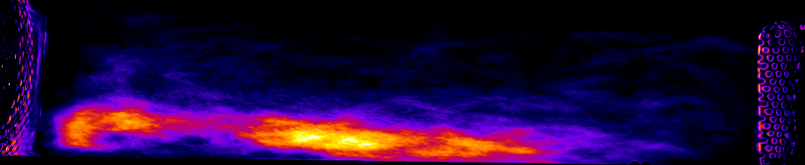

Sum Heatmap Images
Generates an image using pixelwise addition of the selected frames. Processing steps:
-
Background Reference Creation: Performs an iteration over the frames to calculate the Average Z-projection of the raw footage.
-
Background Subtraction: Starts a second iteration over the frames. In this step, subtracts the generated average background from each frame.
-
Brightness Adjust: Increases the overall brightness.
-
Frame Sum: Ending the second frame iteration, this operation sums all pixel values into a single 32-bit frame.
-
Final Composition: A simple B&C adjust is applied, stretching the histogram to its boundaries. After that, the selected Lookup table (LUT) is applied.
Interface

Expected Output

Input Video
Any videos supported by ffmpeg. This includes most video formats in existence. Notably, one exclusion: AVI videos saved from ImageJ with compression set to "None" (codec rawvideo) will not work.
Output Folder
Where output images will be saved with .tif format.
Lookup Table
The LUTs available are the ImageJ's built-in ones (found at Image → Lookup Tables).
Intervals
The checkboxes either activate or deactivate the relative interval.
Frame numbers should be presented as initialFrame-endFrame, both being inclusive, like ImageJ's built-in Image → Duplicate feature.
An empty interval field results in a skipped interval, while a malformed one (without a - separator) throws an error.